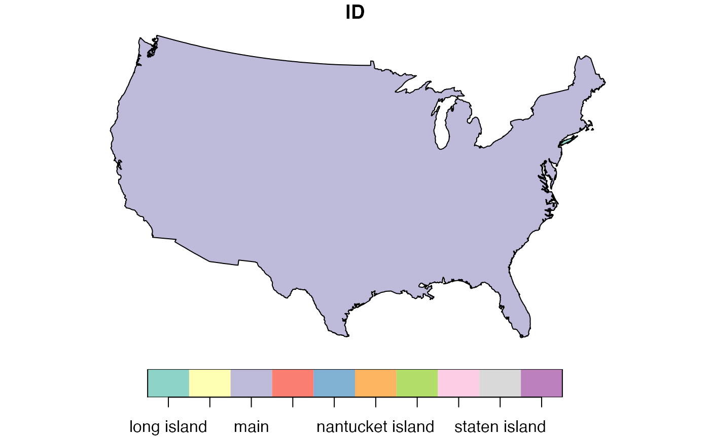
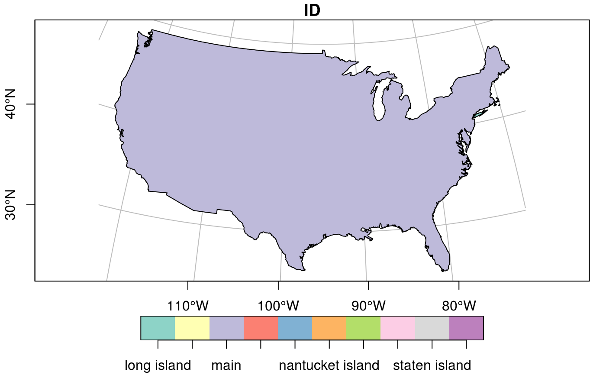

Compute graticules and their parameters
Arguments
- x
object of class
sf,sfcorsfgor numeric vector with bounding box given as (minx, miny, maxx, maxy).- crs
object of class
crs, with the display coordinate reference system- datum
either an object of class
crswith the coordinate reference system for the graticules, orNULLin which case a grid in the coordinate system ofxis drawn, orNA, in which case an emptysfobject is returned.- ...
ignored
- lon
numeric; values in degrees East for the meridians, associated with
datum- lat
numeric; values in degrees North for the parallels, associated with
datum- ndiscr
integer; number of points to discretize a parallel or meridian
- margin
numeric; small number to trim a longlat bounding box that touches or crosses +/-180 long or +/-90 latitude.
Value
an object of class sf with additional attributes describing the type
(E: meridian, N: parallel) degree value, label, start and end coordinates and angle;
see example.
Use of graticules
In cartographic visualization, the use of graticules is not advised, unless the graphical output will be used for measurement or navigation, or the direction of North is important for the interpretation of the content, or the content is intended to display distortions and artifacts created by projection. Unnecessary use of graticules only adds visual clutter but little relevant information. Use of coastlines, administrative boundaries or place names permits most viewers of the output to orient themselves better than a graticule.
Examples
library(sf)
if (require(maps, quietly = TRUE)) {
usa = st_as_sf(map('usa', plot = FALSE, fill = TRUE))
laea = st_crs("+proj=laea +lat_0=30 +lon_0=-95") # Lambert equal area
usa <- st_transform(usa, laea)
bb = st_bbox(usa)
bbox = st_linestring(rbind(c( bb[1],bb[2]),c( bb[3],bb[2]),
c( bb[3],bb[4]),c( bb[1],bb[4]),c( bb[1],bb[2])))
g = st_graticule(usa)
plot(usa, xlim = 1.2 * c(-2450853.4, 2186391.9), reset = FALSE)
plot(g[1], add = TRUE, col = 'grey')
plot(bbox, add = TRUE)
points(g$x_start, g$y_start, col = 'red')
points(g$x_end, g$y_end, col = 'blue')
invisible(lapply(seq_len(nrow(g)), function(i) {
if (g$type[i] == "N" && g$x_start[i] - min(g$x_start) < 1000)
text(g$x_start[i], g$y_start[i], labels = parse(text = g$degree_label[i]),
srt = g$angle_start[i], pos = 2, cex = .7)
if (g$type[i] == "E" && g$y_start[i] - min(g$y_start) < 1000)
text(g$x_start[i], g$y_start[i], labels = parse(text = g$degree_label[i]),
srt = g$angle_start[i] - 90, pos = 1, cex = .7)
if (g$type[i] == "N" && g$x_end[i] - max(g$x_end) > -1000)
text(g$x_end[i], g$y_end[i], labels = parse(text = g$degree_label[i]),
srt = g$angle_end[i], pos = 4, cex = .7)
if (g$type[i] == "E" && g$y_end[i] - max(g$y_end) > -1000)
text(g$x_end[i], g$y_end[i], labels = parse(text = g$degree_label[i]),
srt = g$angle_end[i] - 90, pos = 3, cex = .7)
}))
plot(usa, graticule = st_crs(4326), axes = TRUE, lon = seq(-60,-130,by=-10))
}

